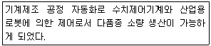
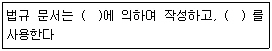
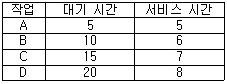

사무자동화산업기사 (2009-05-10 기출문제)
1과목: 사무자동화 시스템
1. 다음중 헤드(Head)가 15개 면당 917개의 트랙(Track), 트랙당 17섹터(Sector)인 하드 디스크의 실린더 수는?
- 17
- 255
- 917
- 15589
(정답률: 82%)

2. 사무자동화 추진의 선결과제로 옳지 않은것은?
- 사무환경 재정비
- 데이터베이스 정비
- 사무관리제도 개혁
- 조직 및 체계의 재정비
(정답률: 69%)
3. 다음중 사무정보기기의 가동률 계산 방법에 관련된 내용으로 옳은 것은?
- 기기의 가동률은 MTTR(MTBF+MTTR)로 나타낼 수 있다.
- MTTR은 수리하는데 걸린 시간의 평균을 의미한다.
- MTBF는 기기를 수리할 동안의 평균시간을 의미한다.
- 시스템 회복을 위해서는 MTBF를 개선해야 한다.
(정답률: 41%)
4. 스프레드시트 기능중 기존 목록이나 표에 있는 데이터를 요약하고 분석할 수 있도록 해주는 대화형 테이블에 해당하는 것은?
- VIEW
- 필터
- ACCESS
- 피벗테이블
(정답률: 87%)
5. 다음중 DBMS 구축과 관련이 없는 것은?
- DDL
- DML
- DBA
- DTP
(정답률: 62%)
6. 멀리 떨어져 있는 회의실 상호간을 통신회선으로 상호 연결하여 회의를 진행할 수 있는 시스템은?
- 원격회의 시스템
- 분산처리 시스템
- 원격조정 시스템
- 텔레텍스트
(정답률: 93%)
7. 다음 중 VDT 작업자의 정신활동 피로도를 측정하는 방법으로 사용될 수 있는 것으로 옳은 것은?
- 근전도
- 심전도
- 산소소비량
- 임계 점멸융합주파수
(정답률: 60%)
8. 하나 이상의 프로그램 또는 연속되어 있지 않은 저장 공간으로부터 데이터를 모은 다음, 데이터들을 메시지 버퍼에 집어 넣고, 특정 수신기나 프로그래밍 인터페이스에 맞도록 그 데이터를 조직화 하거나 미리 정해진 다른 형식으로 변환하는 과정을 일컷는 것은?
- Straming
- Converting
- Porting
- Marshalling
(정답률: 64%)
9. 개인용 컴퓨터, 팩시밀리, 텔렉스 등 통신 수단에 관계없이 상대방의 통신 수단별 번호만 알면 국내외 어디서나 메시지를 교환 할 수 있는 시스템은?
- EDI
- WCDMA
- MHS
- 인트라넷
(정답률: 67%)
10. 다음 중 분산처리시스템의 장점이 아닌 것은?
- 시스템의 확장성
- 시스템의 신뢰성
- 생산성의 증대
- 창조성(Creation)
(정답률: 65%)
11. 다음 중 데이터베이스의 장점으로 옳지 않은 것은?
- 데이터 중복을 최소화하여 자료의 일치를 기함
- 단말기를 통해 요구된 내용을 일괄 처리
- 데이터의 물리적, 논리적 독립성 유지
- 데이터 보안을 유지하여 데이터의 손실 방지
(정답률: 53%)
12. CAM(Content Addressable Memory) 에 대한 설명으로 옳은 것은?
- 주소 공간의 확대가 목적이다.
- 하드웨어 비용이 대단히 적다.
- 구조 및 동작이 대단히 간단하다.
- 저장된 정보의 내용 자체로 검색한다.
(정답률: 49%)
13. 사무자동화를 추친하는데 있어 먼저 적용할 특정 부문을 선정하여 사무자동화를 추진해가는 접근 방식은?
- 공통과제형 접근방식
- 전사적 접근방식
- 부문 전개 접근방식
- 업무별 접근방식
(정답률: 61%)
14. 정보는 저장되었다가 필요한 경우에 언제든지 찾아내어 이용되어야 하는데 자료 저장기기로서 적합하지 않은것은?
- 마이크로필림
- 하드디스크
- 광디스크
- POS 시스템
(정답률: 69%)
15. 다음 중 OA(사무자동화)의 기본 요건을 A, B, C, D 라고 할 때 이를 바르게 설명하지 않은 것은?
- A : Automated Office(자동화 사무실)
- B : Business Machine(사무기기)
- C : Communication System(통신 시스템)
- D : Data Communucation(데이터 통신)
(정답률: 77%)
16. 다음 중 원격지 컴퓨터 서버에 접속하는 방법으로 옳지 않은 것은?
- FTP를 이용하여 원격지 서버에 접속한다.
- Telnet을 이용하여 원격지의 서버에 접속한다.
- 전자우편 시스템을 이용하여 원격지의 서버에 접속한다.
- Login을 사용하여 서버에 접속한다.
(정답률: 58%)
17. 일반적으로 패킷망과 기존의 유무선망 간의 연동 기능을 수행하는 장비로 미디어 게이트웨이 커트롤러라고도 불리는 것은?
- Access Point
- Hub
- Router
- Soft Switch
(정답률: 58%)
18. 다음 설명에 적합한 자동화 시스템은?

- HA : Home Automation
- OA : Office Automation
- FA : Factory Automation
- BA : Building Automation
(정답률: 83%)
19. 다음 중 경영정보시스템(MIS)에 속하지 않는 것은?
- 의사결정 시스템
- 프로세스 서브시스템
- 통신규약 시스템
- 데이터베이스 서브시스템
(정답률: 49%)
20. 사무자동화 시스템의 추진 효과를 측정하기 위한 방법으로 적합하지 않은 것은?
- 투자효율 측정
- 상대적 효과 측정
- 정성적 측정
- 정량적 측정
(정답률: 47%)
2과목: 사무경영관리 개론
21. 사무를 위한 작업의구성 요소에 해당되지 않는 것은?
- 계산
- 분류정리
- 정보예측
- 기록 또는 면담
(정답률: 63%)
22. 다음 ( ) 안에 적합한 내용을 순서대로 나열한 것은?

- 시행문형식, 일자별 일련번호
- 시행문형식, 누년 일련번호
- 조문형식, 일자별 일련번호
- 조문형식, 누년 일련번호
(정답률: 64%)
23. 사무계획화의 대상으로 볼 수 없는 것은?
- 사무 작업의 개선 발전을 위한 사항
- 유효 적절한 정보처리 문제
- 임금 인상을 위한 사항
- 사무 진행상 더욱 능률적이고 유기적인 관계를 유지하도록 하는 사항
(정답률: 88%)
24. 전통적 관리와 목표에 의한 관리에는 몇가지 차이점이 있다. 다음 중 목표에 의한 관리에 해당하는 것은?
- 목표설정이 귀납적임
- 상급자에 의해 통제됨
- 분업화 및 전문화가 촉진됨
- 높은 수준의 욕구충족이 가능함
(정답률: 42%)
25. 다음중 안소프(H.I.Ansoff)에 의한 기업의 의사결정에 포함되지 않은것은?
- 전략적 의사결정(Strategic Decision)
- 관리적 의사결정(Administrative Decision)
- 업무적 의사결정(Operating Decision)
- 경쟁적 의사결정(Competitive Decision)
(정답률: 73%)
26. 다음 중 사무계획을 함으로써 얻어지는 효과로 가장 적합한 것은?
- 사무원의 여유시간이 단축됨에 따라 사무업무가 중복된다.
- 중요한 업무를 중요하지 않은 업무보다 선행하여 처리한다.
- 관리자보다 작업자가 행동방침을 결정하게 되어 능률적인 작업을 한다.
- 업무량이 늘어나게 되어 고용증대 효과가 발생한다.
(정답률: 58%)
27. 계획화(Planning)의 내용과 거리가 먼 것은?
- 목표 또는 목적의 설정
- 자금의 조달과 원천의 결정
- 실시 가능한 대체안 중 최선안 선택
- 업무처리 결과에 대한 분석
(정답률: 63%)
28. 다음 중 사무자동화를 위하여 복합화의 필요성이 아닌것은?
- 다른 기종간의 단순 복합화
- 사무업무의 흐름을 고려한 복합화
- 대화 형태를 고려한 복합화
- 정보가치의 증대
(정답률: 37%)
29. 사무실 배치(Office Layout)를 고려할 때 고려해야 할 사항이 아닌것은?
- 사무처리나 업무의 흐름이 원활히 유통하도록 한다.
- 건물의 공간을 잘 활용하도록 한다.
- 근무자 입장에서 배치하여야 한다.
- 부서 확대 등 장래를 예측하여 융통성 있는 배치를 한다.
(정답률: 47%)
30. 정보 관리가 단계적으로 잘 표현된 것은?
- 정보수요파악→수집계획수립→정보가공→정보활용
- 수집계획수립→정보가공→정보활용→정보수요파악
- 정보수요파악→수집계획수립→정보활용→정보가공
- 수집계획수립→정보가공→정보수요파악→정보활용
(정답률: 55%)
31. 조직의 기본 원칙 중 전문화의 원칙을 가장 잘 설명한 것은?
- 직속 상위자에게 명령을 받아야 하며 이는 조직의 능률성과 목표 통일에 있다.
- 명령 계통과 의사 소통의 효과를 증대시키기 위해 필요하다.
- 업무특성과 전문적인 기술, 지식에 적합한 상태에서 업무를 수행하게 한다.
- 조직목표를 원활하게 달성시킬 수 있도록 집단의 노력을 통합, 조정하여 균형을 이루게 한다.
(정답률: 60%)
32. 산업보건기준에 관한 규칙에 의한 산소 결핍의 정의에 해당하는 것은?
- 공기 중의 산소농도가 10% 미만인 경우
- 공기 중의 산소농도가 14% 미만인 경우
- 공기 중의 산소농도가 18% 미만인 경우
- 공기 중의 산소농도가 20% 미만인 경우
(정답률: 48%)
33. 사무 관리의 산출요소 중에서 투입과 산출의 대응시기의 문제점은?
- 유효성
- 능률성
- 산출발현의 Time Lag
- Side Effect
(정답률: 72%)
34. 사무자동화를 종합적, 체계적으로 추진하기 위하여 사무자동화 기본계획을 수립하여 추진시 포함되지 않는 것은?
- 사무자동화의 구축 현황에 관한 사항
- 사무자동화의 대상이 되는 사무분야
- 사무자동화의 교육, 훈련에 관한 사항
- 사무자동화기기 이용기술의 보급에 관한 사항
(정답률: 30%)
35. 한국 십진분류법 중 “300”에 해당하는 것은?
- 철학
- 기술과학
- 자연과학
- 사회과학
(정답률: 49%)
36. 다음은 사무에서 경영에 이르는 경로이다. 올바른 것은?
- 사무→자료→정보→의사결정→경영
- 정보→의사결정→사무→자료→경영
- 사무→자료→의사결정→정보→경영
- 사무→의사결정→자료→정보→경영
(정답률: 58%)
37. 다음 중 개인정보 관리책임자를 지정하지 아니할 수 있는 자는?
- 상시 종업원 수가 5명 미만인 정보통신서비스 제공자외의 자
- 상시 종업원 수가 7명 미만인 정보통신서비스 제공자외의 자
- 상시 종원원 수가 10명 미만인 정보통신서비스 제공자외의 자
- 상시 종업원 수가 50명 미만인 정보통신서비스 제공자외의 자
(정답률: 56%)
38. 다음 중 문서관리의 원칙에 속하지 않는 것은?
- 문서는 효율적인 업무수행을 위하여 그날로 처리하는 것이 바람직 하다.
- 문서는 각자의 직무범위 내에서 책임을 가지고 관계구정에 따라 처리하여야 한다.
- 문서는 법령의 규정에 따라 일정한 형식 및 요건을 갖추어야 한다.
- 문서는 각 부서의 직원들이면 누구나 다 작성 및 처리 할수 있다.
(정답률: 76%)
39. 사무관리란 눈에 보이지 않은 힘으로 기업의 목적을 달성하기 위하여 지휘, 통제하는 행위라고 말한 사람은?
- C.B Hicks
- C.L. Littlefield
- G.M. Darlington
- G.R. Teery
(정답률: 60%)
40. 프로그램배타적발행권 등으 그 설정행위에 특약이 없을 때에는 몇 년간 존속하여야 하는가?
- 1년
- 3년
- 5년
- 10년
(정답률: 43%)
3과목: 프로그래밍 일반
41. “프로그램이 판독성이 좋다”는 의미로 가장 적절한 것은?
- 변수의 개수를 적게 사용한다.
- 암시적 문장을 많이 포함한다.
- 번역기가 번역 시간을 짧게 할 수 있다.
- 문서 없이 프로그램의 이해가 가능하다.
(정답률: 68%)
42. 대부분의 고급 프로그래밍 언어에서 제공하는 예약어에 관한 설명으로 거리가 먼것은?
- 예약어의 사용은 프로그램의 판독성을 저해한다.
- 프로그램을 번역할 때 예약어의 사용은 심벌 테이블 검색 시간을 단축 시킨다.
- 예약어의 사용은 발생하였을 때 오류회복(Error Recovery)을 가능케 한다.
- 프로그래머가 변수 이름이나 다른 목적으로 사용할수 없는 핵심어(Key Word)이다.
(정답률: 58%)
43. 프로그램을 구성하는 함수에서 전역변수를 사용하여 함수의 결과를 반환하는 경우, 함수에 전달되는 입력 파라미터의 값이 같아도 전역 변수의 상태에 따라 함수에서 반환되는 값이 달라질 수 있는 현상을 무엇이라 하는가?
- Reference
- Side Effect
- Monitor
- Recursive
(정답률: 54%)
44. C언어의 관계 연산자에 해당하지 않은 것은?
- <
- %
- ==
- !=
(정답률: 75%)
45. C언어의 이스케이프 시퀀스에서 “Carrage Return"을 나타내는 기호는?
- ＼t
- ＼n
- ＼b
- ＼r
(정답률: 86%)
46. 목적 모듈(준기계어)를 로드 모듈로 생성해 주는 것은?
- 로더
- 링커
- 컴파일러
- 사전처리기
(정답률: 47%)
47. C 언어네 사용하는 자료형이 아닌 것은?
- long
- integer
- float
- double
(정답률: 83%)
48. C언어에서 사용하는 기억 클래스의 종류가 아닌 것은?
- Automatic Variables
- Register Variables
- Message Variables
- Static Variables
(정답률: 75%)
49. 저급 언어(Low-Level Language)에 해당되는 것은?
- C
- Assembly Language
- COBOL
- FORTRAN
(정답률: 82%)
50. 중위 표기법(Infix Notation)으로 표현된 산술식 “X=A+C/D"를 전위 표기법(Perfix Notation)으로 옳게 나타낸 것은?
- =X+A/CD
- =+/XACD
- /CD+A=X
- XACE/+=
(정답률: 74%)
51. BCNF 표기법에서 반복을 의미하는 기호는?
- { }
- |
- ::=
- #
(정답률: 74%)
52. 번역된 프로그램의 실행 오류를 찾기 위한 것은?
- 디버거(Debugger)
- 링커(Linker)
- 로더(Loader)
- 에디터(Editor)
(정답률: 89%)
53. 인터프리터에 대한 설명으로 옳지 않은 것은?
- 고급 언어로 작성된 원시 코드 명령문들을 한번에 한 줄씩 읽어 들여서 실행하는 프로그램 기법이다.
- 한 줄 단위로 번역이 이루어져 문법상의 오류를 쉽게 발견 할 수 있다.
- 번역과 실행이 한꺼번에 이루어져 목적 코드라 불리는 개체
- 인터프리터 기법의 대표적 언어는 C, COBOL, BASIC 이다.
(정답률: 72%)
54. 구문 분석기가 올바른 문장에 대해 그 문장의 구조를 트리로 표현한 것으로 루트, 중간, 단말 노드로 구성되는 트리를 무엇이라고 하는가?
- 정규화 트리
- 디버깅 트리
- 파스 트리
- BNF 트리
(정답률: 80%)
55. HRN(Highest Response ratio Next) 방식으로 스케줄링 할 경우, 입력된 작업이 다음과 같을 때 가장 먼저 처리되는 작업은?

- A
- B
- C
- D
(정답률: 68%)
56. 객체지향 개념에서 이미 정의되어 있는 상위 클래스(슈퍼클래스 혹은 부모 클래스)의 메소드를 비롯한 모든 속성을 하위 클래스가 물려받는 것을 무엇이라 하는가?
- Abstraction
- Method
- Inheritance
- Message
(정답률: 73%)
57. 이항 연산에 해당하는 것은?
- ROTATE
- AND
- SHIFT
- NOT
(정답률: 57%)
58. 교착상태의 발생 조건이 아닌 것은?
- 상호배제
- 환형대기
- 선점
- 점유와 대기
(정답률: 62%)
59. 프로그래밍 언어에서 수명 시간 동안 고정된 하나의 값과 이름을 가진 자료로서 프로그램이 동작하는 동안 값이 절대로 바뀌지 않는 것을 의미하는 것은?
- 상수
- 변수
- 예약어
- 주석
(정답률: 59%)
60. 운영체제를 수행 기능에 따라 제어 프로그램과 처리 프로그램으로 구분할 경우 처리 프로그램에 해당하는 것은?
- 감시 프로그램
- 작업 제어 프로그램
- 자료 관리 프로그램
- 언어 번역 프로그램
(정답률: 70%)
4과목: 정보통신 개론
61. 다음 중 OSI 네트워크 계층화의 구성요소에서 서비스 프리미티브(Primitive)에 해당하는 것은?
- 요구, 지시, 응답, 확인
- 접속, 요구, 확인, 응답
- 요구, 접속, 해제, 전송
- 접속, 확인, 응답, 해제
(정답률: 68%)
62. 다음 중 데이터 전송에서 ITU-T로 권고하는 X 시리즈란?
- 동화상 압축을 위한 프로토콜
- PSTN을 이용하는 데이터 전송
- PSDN을 이용하는 데이터 전송
- 이동전화 단말용 통신 프로토콜
(정답률: 55%)
63. 다음 중 멀티미디어의 표준화에 해당되지 않는 것은?
- JPEG
- MPEG
- MHS
- MHEG
(정답률: 54%)
64. 다음 중 나이퀴스트(Nyquist) Sampling Theoem과 관련 있는 것은?
- 표준화
- 양자화
- 부호화
- 복호화
(정답률: 50%)
65. 9600[bps]의 비트열(bit stream)을 8진 PSK로 변조하여 전송 하면 변조 속도는?
- 1200[baud]
- 3200[baud]
- 9600[baud]
- 76800[baud]
(정답률: 53%)
66. 다음 중 인터넷 관련 사항으로 옳지 않은 것은?
- TCP/IP는 TCP 프로토콜과 IP 프로토콜의 결합적 의미로서 TCP가 IP보다 상위 계층에 존재 한다.
- TCP/IP는 계층형 구조를 가지고 있다.
- TCP는 OSI 참조모델의 네트워크계층에 대응되고, IP는 트랜스포트 계층에 대응된다.
- ICMP는 Internet Control Message Protocol을 뜻한다.
(정답률: 50%)
67. 다음 중 OSI-7 참조 모델의 계층에 해당되지 않는 것은?
- 네트워크 계층
- 물리 계층
- 프레임 계층
- 세션 계층
(정답률: 65%)
68. 다음 중 연속적 ARQ 에 해당하는 것은?
- Stop and Wait ARQ
- Go-back-N ARQ
- Adqptive ARQ
- CRC ARQ
(정답률: 48%)
69. 다음 중 파일을 다른 시스템으로 전송할 때 주로 이용되는 프로토콜은?
- TELNET
- SNMP
- FTP
- DNS
(정답률: 55%)
70. 다음 중 정보 전송시 오류검출 방법이 아닌 것은?
- 블록 합 검사(Block Sum Check)
- 순환 잉여 검사(Cyclic Redundancy Check)
- 프레임 검사(Frame Check)
- 패리티 비트 검사(Parity Bit Check)
(정답률: 49%)
71. 다음 중 ISDN에서 고속의 사용자 정보 전송을 위한 채널로 384[kbps]의 전송 속도를 갖는 것은?
- B channel
- D channel
- HO channel
- H12 channel
(정답률: 42%)
72. 다음 중 HDLC의 프레임 구조에 포함되지 않는 것은?
- 스타트 필드(Start Field)
- 플래그 필드(Flag Field)
- 주소 필드(Address Field)
- 제어 필드(Control Field)
(정답률: 52%)
73. 데이터통신 서비스의 지역 범위에 따라 구분되는 통신망의 종류가 아닌 것은?
- LAN
- WAN
- VAN
- MAN
(정답률: 63%)
74. 다음 중 선로의 접점 불량, 기계적 진동 등에 의해서 순간적으로 발생되는 잡음은?
- Shot Noise
- Impluse Noise
- Thermal Noise
- Jitter Noise
(정답률: 64%)
75. 다음 중 교환 방식에 관한 설명으로 틀린 것은?
- 회선교환방식은 회선에 융통성이 요구되거나 메시지가 짧은 경우에 적합하다.
- 데이터그램 패킷교환방식은 부하가 적거나 간헐적인 통신의 경우에 적합하다.
- 패킷교환방식은 코드 및 속도 변환이 가능하다.
- 가상회선 패킷교환방식은 패킷 도착 순서가 고정적이다.
(정답률: 33%)
76. 다음 중 광섬유 케이블의 설명으로 틀린 것은?
- 동축 케이블보다 더 넓은 대역폭을 지원한다.
- 전송속도가 UTP 케이블 보다 빠르다
- 전자기적 잡음에 약하다.
- 동축 케이블에 비해 전송손실이 적다.
(정답률: 59%)
77. 대역폭(W)이 3[KHz], 신호전력(S)과 잡음전력(N)의 비 S/N=15일 때 통신 채널용량은 몇 bps 인가?
- 8000
- 10000
- 12000
- 16000
(정답률: 50%)
78. 다음 중 데이터 회선종단장치 또는 이와 관련 없는 것은?
- DCE
- DTE
- MODEM
- DSU
(정답률: 31%)
79. 펄스코드 변조방식(PCM)의 송신측 변조 과정은?
- 입력신호→부호화→양자화→표본화
- 입력신호→양자화→표본화→부호화
- 입력신호→표본화→양자화→부호화
- 입력신호→부호화→표본화→양자화
(정답률: 79%)
80. 다음 중 반송파의 진폭과 위상을 동시에 변조하는 방식은?
- ASK
- FSK
- PSK
- QAM
(정답률: 76%)